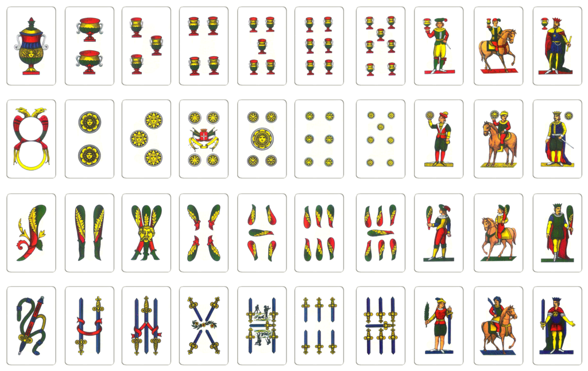

Scopa is an old Italian card game. Scopa meaning "broom" is when a player sweeps all the cards off the table.
Instructions:
The game starts with three cards to each player and 4 cards to middle. Players take turns choosing one of their cards to either use(click on the card) or drop(use the button under the card). They then select a number of cards from the middle section of cards that add up to the card being used from their hand. Those cards used are then deposited into the players total pile. When all forty cards have been delt, points are awarded to the player with the most cards as well as the most 7 cards. A point is awarded for every Scopa, which is when a player picks up the all remaining cards from the middle section.
Game is played to 7 points.

Back to Game